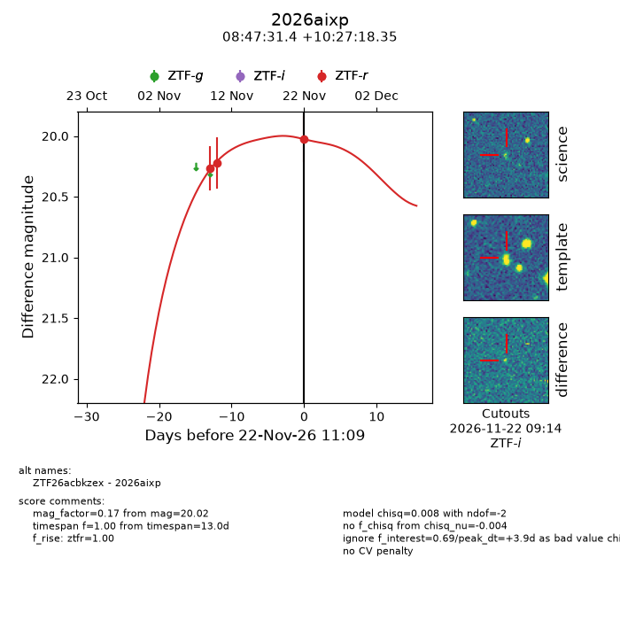
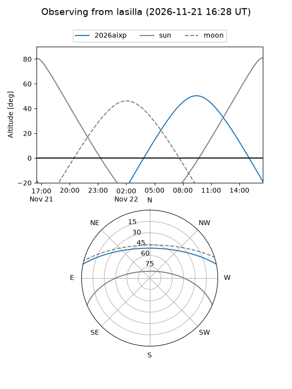
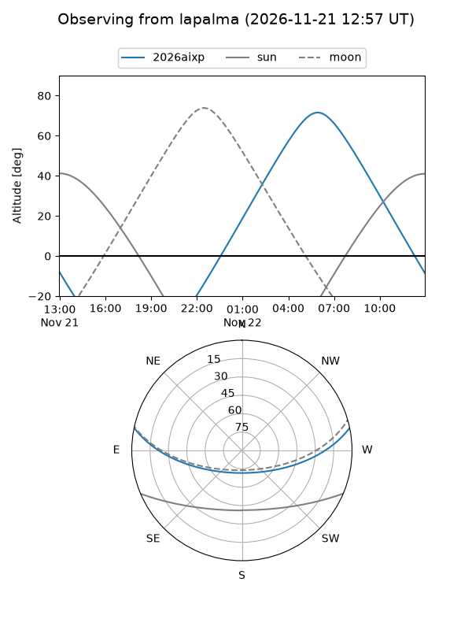
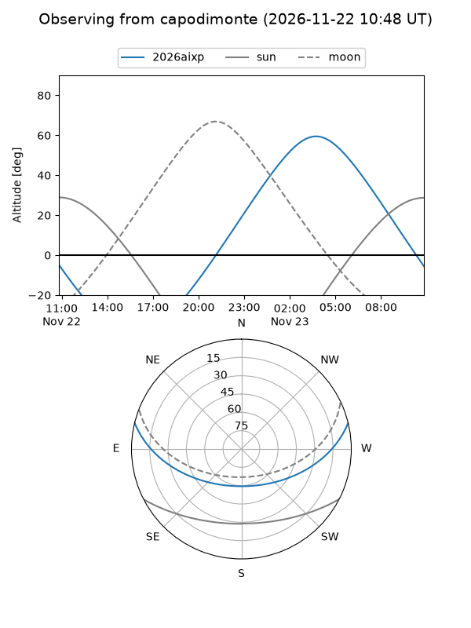
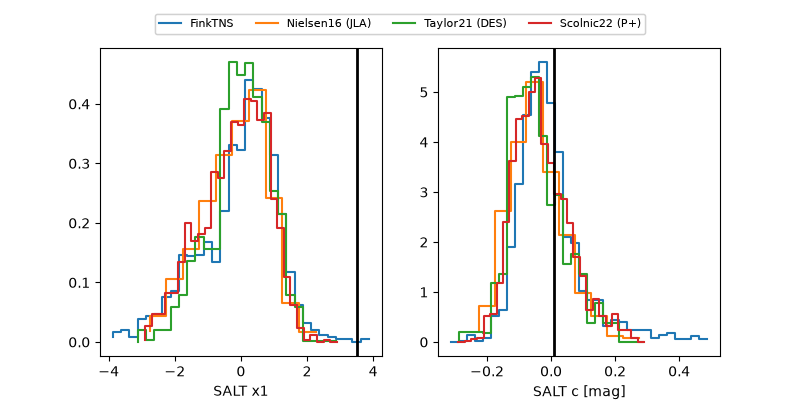

2026aixp
Target 2026aixp at 2026-11-22 11:10
Aliases and brokers:
FINK-ZTF: ztf.fink-portal.org/ZTF26acbkzex
Lasair-ZTF: lasair-ztf.lsst.ac.uk/objects/ZTF26acbkzex
ALeRCE-ZTF: alerce.online/object/ZTF26acbkzex
YSE-PZ: ziggy.ucolick.org/yse/transient_detail/2026aixp
TNS name: wis-tns.org/object/2026aixp
Direct TNS query: direct search
alt names
ZTF26acbkzex (ztf,fink_ztf)
2026aixp (tns,yse)
Coordinates:
equatorial (ra, dec) = 131.8807,+10.45510
equatorial (HMS+DMS) = 08:47:31.37,+10:27:18.35
galactic (l, b) = (216.6605,+30.48680)
Flags:
peak dt: +3.9
Photometry:
last ztfr=20.02
3 ztfr detections
Lightcurve

Visibility



Additional plots
